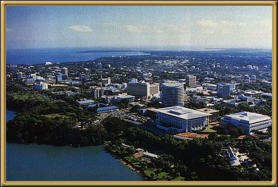

Photographer: Unknown
Darwin - the capital of the Northern Territory! The city was almost completely destroyed by Cyclone Tracey in 1974 (I remember a friend wearing a t-shirt saying "I slept through Cyclone Tracey - and he had!!), and so it is a very modern city, having been totally rebuilt. It's a very relaxed and casual sort of place, and there is a great deal to see and do here.